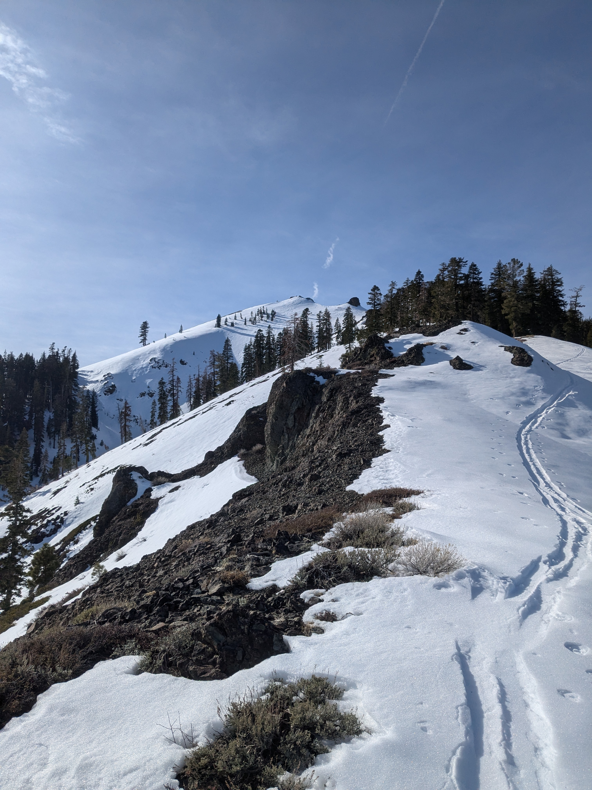
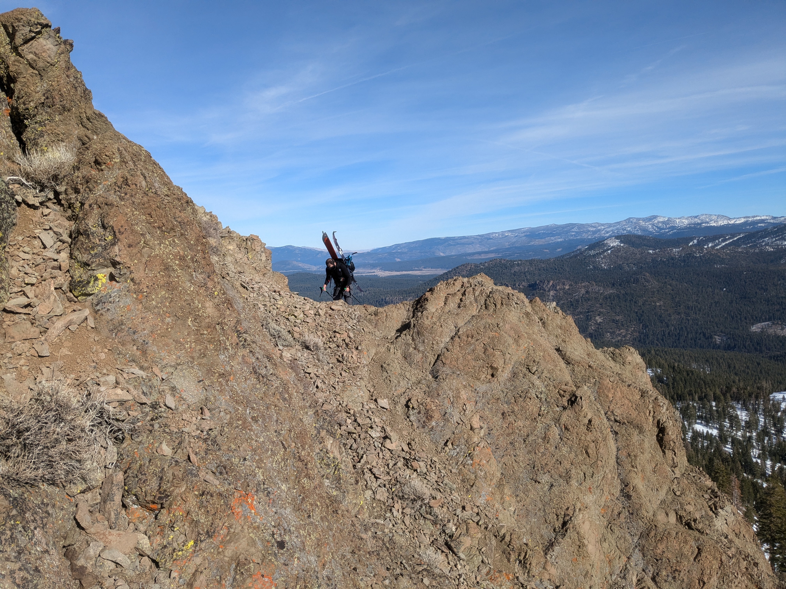
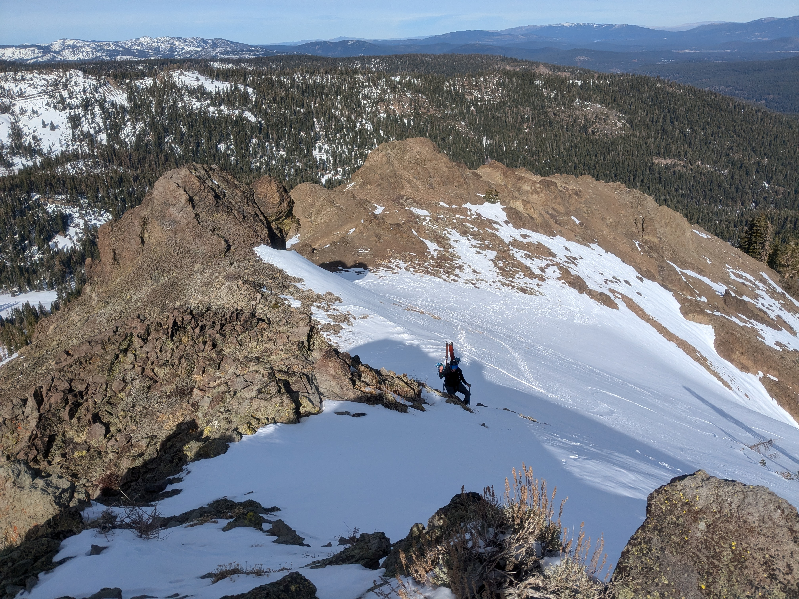
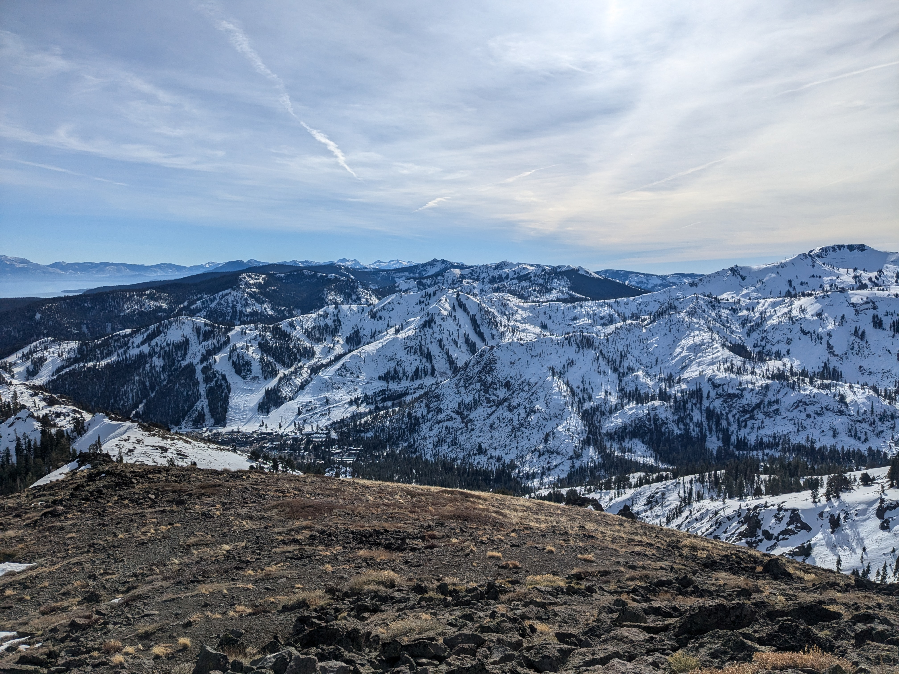

Jacob and I wanted to get out for some early season turns, which ended up being a great choice because this was arguably the best snow conditions of the entire winter of 2024-5. We skied Northstar on Friday (so-so conditions, but good to shake the rust off a bit), stayed with some friends in the area, and then got a leisurely start for Silver Peak the next day.
I had skied in the area a few years previously, not getting far from the road while teaching my sister how to backcountry ski. Silver Peak is a fairly popular backcountry destination, with some nice views and a variety of descent options while being decently short and not too far from Truckee.


We banged out some road distance before following a skin track uphill at a stream crossing. In hindsight, continuing along the road and the summer trail would have made for an easier uphill, but it felt good to work the glutes on some steep forest. At a broad bench below the main peak, we ascended along a ridge to the right of the main bowl, dropping down to the left when needed. We encountered several bare patches, and A-framed our skis for the last several hundred feet to the summit. There were great views of The Resort Formerly Known as Squaw, as well as Lake Tahoe.


We skied off the summit and into the main ENE bowl, finding some good snow. At the bottom of the bowl, we met up with the official trail and followed that out to the road.